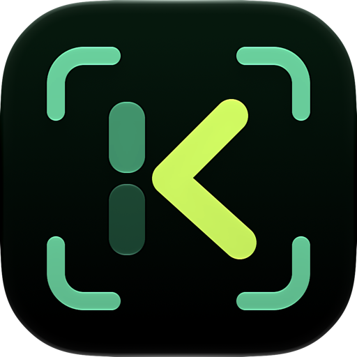
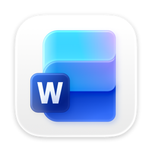
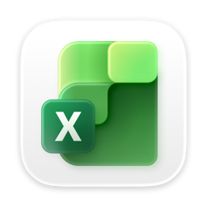
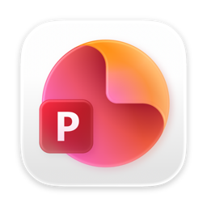
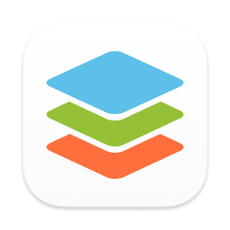
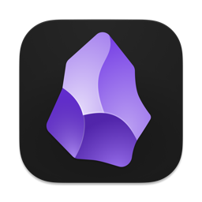

LaTeX, Markdown and HTML to office

Screenshots and scans to text
From messy clipboard to clean, native pastes.
Klip turns LaTeX, Markdown and HTML in your clipboard into clean office formats you can keep editing — and turns copies from Office suites back into clean LaTeX. Text formatting stays intact, it adapts to your workflow, and it's fully customizable. KlipOCR turns your screenshots and documents into editable text. Both run offline and work together.
Works where you write.
Copy once. Tables, math and formatting land clean in every app where you write.





Made for school and office work.
Math you can edit
Math stays editable across Word, PowerPoint, LibreOffice, ONLYOFFICE, WPS and Google Docs. Anything tricky stays as plain text, so nothing gets lost.
Tables that stay tables
Rows and columns from notes or web pages paste as real tables you can edit, math included.
Copy once, paste anywhere
One copy covers Word, Excel, PowerPoint, LibreOffice, ONLYOFFICE, WPS and Google Docs at once — bold, headings, lists and links intact. Notes apps receive the Markdown and LaTeX source as-is.
Read text from pictures
KlipOCR reads screenshots and documents in natural reading order — prose as text, math as LaTeX, tables kept intact — fully on-device.
Works fully offline
Both apps run without internet. Your documents stay on your computer. No account needed to start.
Office back to LaTeX
Copy from any supported suite back into clean LaTeX — or paste from one suite into another without breaking tables and math.
Your questions, answered.
Which apps does it work with?
Word, Excel, PowerPoint, LibreOffice, ONLYOFFICE, WPS and Google Docs — plus Obsidian, Typora and Bear, which receive your Markdown and LaTeX untouched.
Does my work leave my device?
No. Both apps work fully offline. Nothing you copy or snip leaves your computer, ever.
Can it read messy screenshots?
Yes for clear text and tables. Blurry or handwritten pages may need a quick fix after pasting.
What if some math won't convert?
You never lose it. Anything tricky stays as plain text you can fix by hand.
Can it read full documents, not just snips?
Yes. Drop in an image or PDF and KlipOCR reads it into editable text — prose as text, math as LaTeX, tables kept intact.
What can I use for free?
Klip: pastes up to 1000 characters, 21 free the first week, then 14 a week. KlipOCR: free snips with unlimited length, document mode locked.